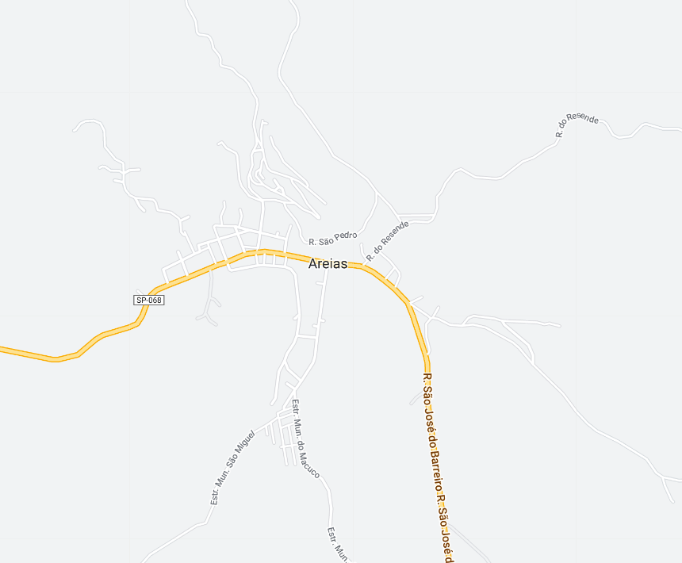
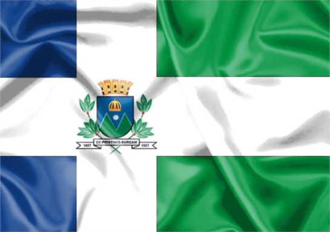

Areias - Geodex


Município de Areias
-
Populacão: 3.906 pessoas
-
Área: 305,227km²
-
Fundação: Janeiro de 1748
-
Distância da Capital: 247km
Areias, inicialmente uma Freguesia, foi fundada em 1748 como Santana da Paraíba Nova e servia de pouso para tropeiros que viajavam de São Paulo e Minas Gerais para o Rio de Janeiro. Em 1801, tornou-se Distrito de Paz e em 1816, foi elevada a Vila com o nome de Vila de São Miguel das Areias. Em 1857, recebeu o status de cidade e passou a ser chamada apenas de Areias. No século XIX, foi pioneira na plantação de café, chegando a produzir 100 mil arrobas. A cidade anexou outras freguesias ao seu território, mas sofreu com a decadência do café no início do século XX, levando à perda de sua opulência como uma cidade progressista.